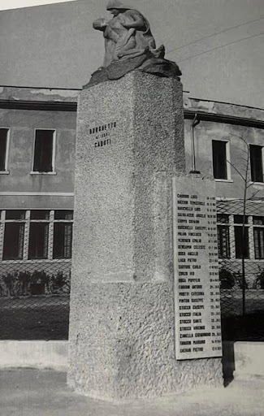

Il monumento, posizionato a San Martino di Lupari, in località Borghetto, è dedicato ai caduti. Qui sono state apportate diverse modifiche nel corso del tempo: la statua posizionata sul punto più alto della stele è stata sostituita radicalmente, e ne è stata aggiunta un'altra a fianco della targa nella quale sono incisi i nomi dei caduti. In data 29 aprile 1945, mentre la colonna principale della divisione Falk si dirige verso S. Martino di Lupari, a Borghetto una colonna blindata viene mitragliata da alcuni aerei «Spitfire». Vengono danneggiati diversi veicoli e alcuni soldati perdono la vita.
SITOGRAFIA E BIBLIOGRAFIA Menzato Cirillo, Il sacrificio terminale, Fabris Giuseppe, PD